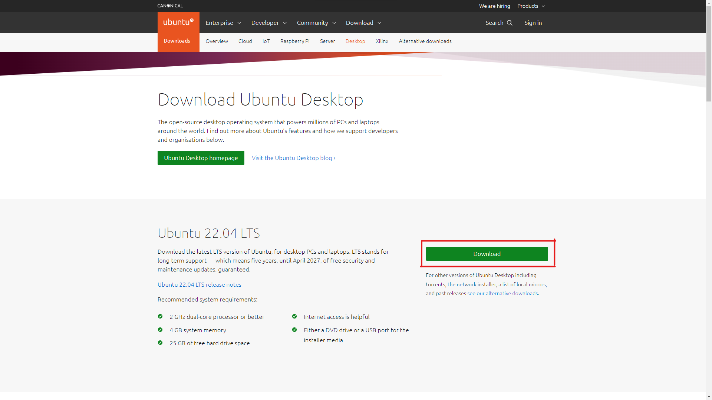
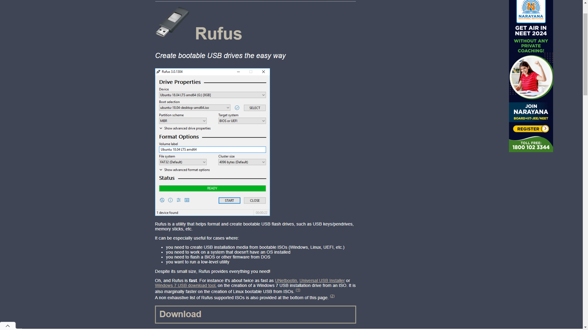
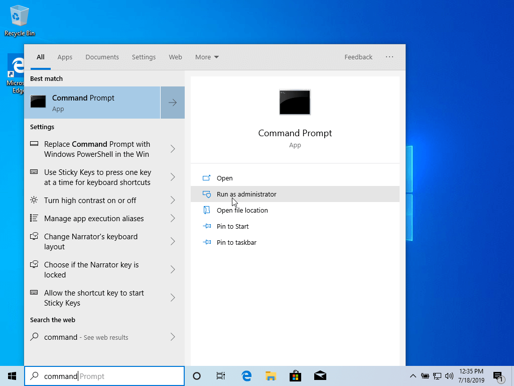
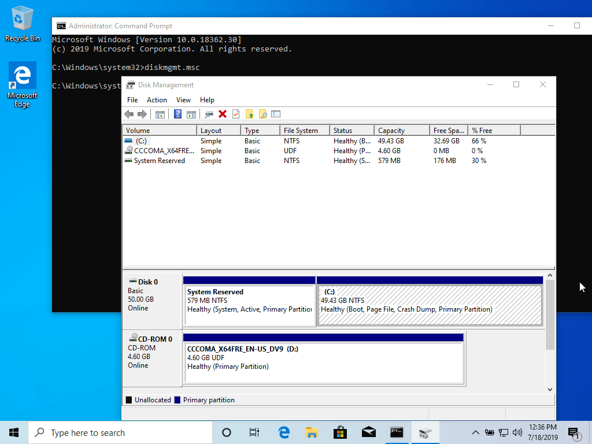
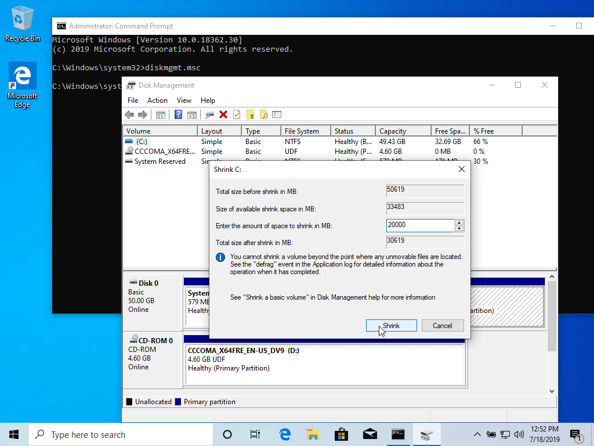

Hello World!
All About Linux
Just like Windows, iOS, and Mac OS, Linux is an operating system. In fact, one of the most popular platforms on the planet, Android, is powered by the Linux operating system. An operating system is software that manages all of the hardware resources associated with your desktop or laptop. To put it simply, the operating system manages the communication between your software and your hardware. Without the operating system (OS), the software wouldn't function.
The Linux operating system comprises several different pieces:
- Bootloader - The software that manages the boot process of your computer. For most users, this will simply be a splash screen that pops up and eventually goes away to boot into the operating system.
- Kernel - This is the one piece of the whole that is actually called "Linux". The kernel is the core of the system and manages the CPU, memory, and peripheral devices. The kernel is the lowest level of the OS.
- Init system - This is a sub-system that bootstraps the user space and is charged with controlling daemons. One of the most widely used init systems is systemd, which also happens to be one of the most controversial. It is the init system that manages the boot process, once the initial booting is handed over from the bootloader (i.e., GRUB or GRand Unified Bootloader).
- Daemons - These are background services (printing, sound, scheduling, etc.) that either start up during boot or after you log into the desktop.
- Graphical server - This is the sub-system that displays the graphics on your monitor. It is commonly referred to as the X server or just X.
- Desktop environment - This is the piece that the users actually interact with. There are many desktop environments to choose from (GNOME, Cinnamon, Mate, Pantheon, Enlightenment, KDE, Xfce, etc.). Each desktop environment includes built-in applications (such as file managers, configuration tools, web browsers, and games).
- Applications - Desktop environments do not offer the full array of apps. Just like Windows and macOS, Linux offers thousands upon thousands of high-quality software titles that can be easily found and installed. Most modern Linux distributions (more on this below) include App Store-like tools that centralize and simplify application installation. For example, Ubuntu Linux has the Ubuntu Software Center (a rebrand of GNOME Software) which allows you to quickly search among the thousands of apps and install them from one centralized location.
Linux Distros
Distro is an acronym for distribution. A Linux distribution may also be described as a particular assortment of application and utility software (various GNU tools and libraries, for example), packaged with the Linux kernel in such a way that its capabilities meet many users' needs. The software is usually adapted to the distribution and then combined into software packages by the distribution's maintainers. The software packages are available online in repositories, which are storage locations usually distributed around the world. A typical Linux distribution comprises a Linux kernel, GNU tools and libraries, additional software, documentation, a window system (the most common being the X Window System, or, more recently, Wayland), a window manager, and a desktop environment, although the later might not be present in some distributions (for example, Arch).
One of the most popular Linux distributions is Ubuntu. Ubuntu is a debian based distribution, and it is popular for it's stable yet up to date pakages. It follows an LTS (long term support) release cycle, where a new stable version is launched every two years.
Installing a Linux OS (Ubuntu as of this blog post)
To install a Linux OS, first, we decide what distro we want to install. Here, we will go through a quick ubuntu installation.
-
First,
back up all the data in your system
so that you do not lose any vital data if something goes
wrong.
-
Now, go to
https://ubuntu.com/download/desktop
and click on the Download button.

This will download the ubuntu iso file that we will use for the installation.
-
While that is installing, go to
https://rufus.ie/en
and click on the Download button.

We will use this software to flash the iso file in an usb drive to make it bootable.
-
Now, take an USB drive that has a minimum of 4GB Space, and
insert into your PC.
Make sure to back up all the files in the drive as it will
be formatted in the next step.
-
Now, create free space on the computer hard disk in case the
system is installed on a single partition.
To do that, log in to your Windows machine with an administrative account and right-click on the Start Menu -> Command Prompt (Admin) in order to enter Windows Command-Line.

Once in CLI, typediskmgmt.mscon prompt, and the Disk Management utility should open. From here, right-click onC:the partition and select Shrink Volume in order to resize the partition.

On ShrinkC:enter a value on space to shrink in MB (use at least 20000 MB depending on the C: partition size) and hit Shrink to start partition resize as illustrated below (the value of space shrink from below image is lower and only used for demonstration purposes).

Once space has been resized you will see a new unallocated space on the hard drive. Leave it as default and reboot the computer in order to proceed with the Ubuntu installation.
-
Now, follow the steps here to
make a bootable drive using Rufus
-
Place the USB stick or DVD in the appropriate drive, reboot
the machine, and instruct the
BIOS/UEFI
to boot up from the DVD/USB by pressing a special function
key (usually
F12
,
F10
or
F2
depending on the vendor specifications).
Once the media boot-up a new grub screen should appear on your monitor.
From the menu select Install Ubuntu and hit Enter to continue.
After the boot media finishes loading into RAM you will end up with a completely functional Ubuntu system running in live mode.
On the Launcher choose Install Ubuntu , and the installer utility will start. Choose the keyboard layout you wish to perform the installation and click on the Continue button to proceed further.
Next, choose the first option "Normal Installation" and hit on the Continue button again. -
Now it's time to select an Installation Type. You can choose
to
Install Ubuntu
alongside
Windows Boot Manager
, an option that will automatically take care of all the
partition steps. Use this option if you don't require a
personalized partition scheme.
In case you want a custom partition layout, check the Something else option and hit on the Continue button to proceed further.
The option Erase disk and install Ubuntu should be avoided on dual-boot because is potentially dangerous and will wipe out your disk.
Here, we will dual boot ubuntu with windows (i.e., you will have both the os each consuming a part of your disk space and you can eun only one at a time. Each will take up the whole RAM of the device when it is running). So, click on Install Ubuntu alongside Windows
-
Now, a new pop-up window will ask you if you agree with
committing changes to the disk. Hit Continue to write
changes to disk and the installation process will now start.
On the next screen adjust your machine's physical location by selecting a city nearby from the map. When done hit Continue to move ahead.
Pick up a username and password for your administrative sudo account, enter a descriptive name for your computer and hit Continue to finalize the installation. From here on the installation process will run automatically until it reaches the end.
-
After the installation process reaches its end hit on the
Restart Now
button in order to complete the installation.
The device will reboot into the Grub > menu, where for ten seconds, you will be presented to choose what OS you wish to use further: Ubuntu 22.04 or Microsoft Windows .
Ubuntu is designated as the default OS to boot from. Thus, just press Enter key or wait for those 10 seconds timeout to drain.
-
After Ubuntu finishes loading, log in with the credentials
created during the installation process, and enjoy it.
Ubuntu
provides
NTFS
file system support automatically so you can access the
files from Windows partitions just by clicking on the
Windows
volume.
That's it! In case you need to switch back to
Windows
, just reboot the computer and select
Windows
from the
Grub
menu.
In case you are not confident about the process, you can test
out the same in a
virtual machine
. All you need to do is follow the exact same steps (except
that you do not need to create a bootable drive and just need
to attach the ISO File to the VM instead) and you will get a
virtual machine of Ubuntu 22.04
up and running.
Video Tutorial
For a video tutorial, click here